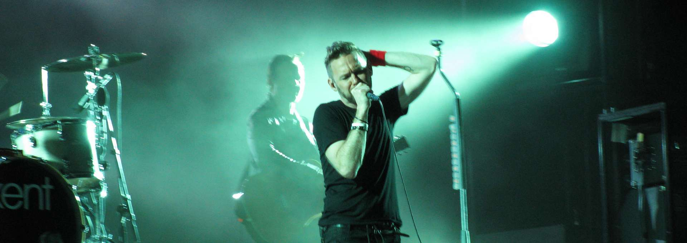

Kent（肯特乐队）是一支瑞典另类摇滚乐队，于1990年在埃斯基尔斯蒂纳成立。乐队成员包括乔金·伯格（主唱/吉他）、马丁·斯科尔德（贝斯）、萨米·瑟维奥（吉他）和马库斯·穆斯托宁（鼓手）。自1996年专辑《Verkligen》（意为“真实”）发行以来，他们凭借单曲《Kräm (så nära får ingen gå)》等作品在瑞典及斯堪的纳维亚地区创造了多首电台热播曲，并连续有多张录音室专辑登上瑞典官方排行榜（Sverigetopplistan）冠军位置。
Kent（肯特乐队）
瑞典神级摇滚乐队

乐队简介
乐队早期以失真摇滚为根基，在20世纪90年代中期至21世纪10年代通过其另类摇滚专辑取得主流成功，并在后期作品中融入了合成器流行乐元素。他们共拥有11张冠军专辑、5支冠军单曲，荣获22座瑞典格莱美奖，唱片销量超过300万张，被公认为瑞典乃至斯堪的纳维亚地区最受欢迎的摇滚/流行乐队之一。其中，专辑《Vapen & ammunition》（2002）曾在瑞典榜单冠军位置停留八周。Kent常被与U2、酷玩乐队等国际知名团体相提并论。
由于Kent的歌曲主要以瑞典语演唱，因此大多英语听众对其并不熟悉。乐队曾尝试国际化发展，推出了专辑《Isola》（1997）和《Hagnesta Hill》（1999）的英语版本，并为前者进行了美国巡演，但因市场反响不及北欧地区而中止了国际推广。主唱兼词作者乔金·伯格曾表示：“我创作的歌词有两种：一种基于地点，另一种基于情感。你总会在两者之间游走，无论是否出于自愿。”
2016年3月14日，乐队宣布在活跃26年后将发行最后一张专辑《Då som nu för alltid》。该专辑于2016年5月20日发布。乐队在声明中强调，解散决定是自愿的，且正值他们持续成功之时。同年9月，Kent开启了覆盖瑞典、挪威、芬兰和丹麦的为期数月的告别巡演，最终场于2016年12月17日在斯德哥尔摩的Tele2体育馆举行。2025年3月，Kent乐队重组，并在斯德哥尔摩的3Arena举办了六场演唱会。